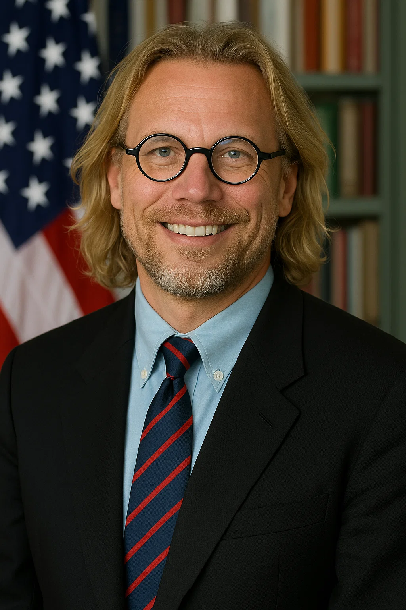

Michael Fitzner
Position: Parteivorsitzender
Michael Fitzner ist der Gründer und Vorsitzende der Michi Partei. Er setzt sich für Innovation, Technologie und soziale Gerechtigkeit ein.
Das Kabinett der Michi Partei (MP) besteht aus engagierten und kompetenten Mitgliedern, die sich für die Ziele und Werte unserer Partei einsetzen.
Position: Parteivorsitzender
Michael Fitzner ist der Gründer und Vorsitzende der Michi Partei. Er setzt sich für Innovation, Technologie und soziale Gerechtigkeit ein.
Position: Leiter der Teilstreitkraft EloKa
Thorsten Clever ist ein erfahrener IT-Experte und leitet die Teilstreitkraft EloKa der Michi Partei. Er ist verantwortlich für die strategische Planung und Umsetzung von IT-Projekten.
Position: Leiter der Klimapolitik
John F. Kerry ist ein erfahrener Diplomat und Umweltaktivist. Er leitet die Klimapolitik der Michi Partei und ist verantwortlich für die Entwicklung und Umsetzung nachhaltiger Strategien zur Bekämpfung des Klimawandels.

Position:Food Blogger
Markus Söder ist ein kreativer Feinschmecker und passionierter Food Blogger. Mit seinem außergewöhnlichen Gespür für kulinarische Trends und Liebe zum Detail inspiriert er die Community der Michi Partei mit originellen Rezepten, spannenden Restauranttests und Einblicken in internationale Küchen.
Position:Grabstein
Tot sein ist keine ausrede!
Position:Außenminister
Sir Winston Churchill bringt als Außenminister der Michi Partei historische Weitsicht und rhetorische Brillanz in die internationale Diplomatie ein. Mit seiner unerschütterlichen Haltung in schwierigen Zeiten und seinem strategischen Denken steht er für eine Außenpolitik, die auf Stärke, Partnerschaft und Prinzipien basiert. Seine Erfahrung als ehemaliger Premierminister Großbritanniens macht ihn zu einem Symbol für Standhaftigkeit und Weitblick auf der weltpolitischen Bühne.

Position:Praktikant
Roosevelt ist guter kriegsminister und hat viel Erfahrung in der Politik. Er ist ein wichtiger Teil des Kabinetts und bringt seine Ideen und Perspektiven ein, um die Michi Partei voranzubringen.